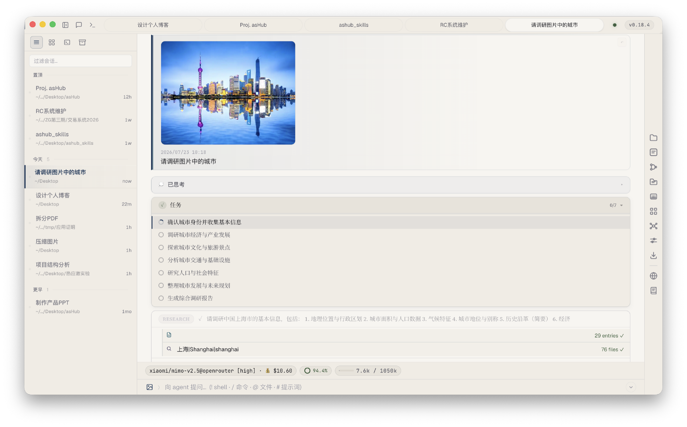
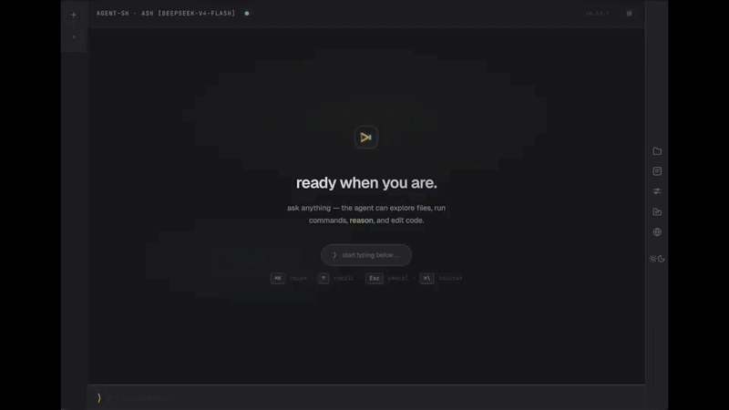

Open Source · Desktop Agent Client
asHub 是 agent-sh 的桌面与 Web 封装 —— 多会话、多模型、多子代理，
把所有 AI 编程会话收进一个窗口。支持 macOS、Windows 与 Linux。

多会话工作区 · 思考折叠 · 任务清单 · 流式渲染
In Action

流式输出 · 工具调用 · 推理过程折叠
Features
从会话管理到子代理编排，从模型成本到渲染细节——每一层都为日常重度使用打磨。
同时推进多条任务线，历史永不丢失，随时回到任何一个分支点。
侧边栏创建、切换、搜索、关闭会话，支持分组与归档——几十条会话也能一屏管理。
重启应用，对话原样保留；LLM 自动生成会话标题，纯文本回退兜底。
rewind 与 fork 自由穿梭对话历史，非破坏性回溯，可视化树形面板呈现全部分支。
任意会话导出为 Markdown 文档，归档、分享、二次加工零成本。
五种专家子代理各司其职，每一步危险操作都要经过你的手。
plan explore review research implement —— 规划、探索、审查、调研、实现，分工明确，支持按类型覆盖模型。
文件修改逐一审批：倒计时、完整 diff 预览、会话级放行——agent 的每一步都在掌控之中。
子代理支持取消、并发限制与独立权限配置，后台运行时通过系统通知触达审批请求。
300+ 模型随心切换，每一分 token 的成本都清晰可见。
模型选择器实时同步 OpenRouter 目录，按 provider 分组、可搜索，多模态能力一目了然。
缓存命中率以进度环实时呈现；DeepSeek、OpenRouter 余额按会话独立显示，状态栏可一键折叠。
修改 apiKey 与 provider 配置后立即生效，无需重启，切换供应商零中断。
流式渲染、多模态、休眠保护——重度使用场景下的每一处打磨。
Markdown、语法高亮、diff 视图随输出即时渲染；块级增量渲染与防抖高亮保证长会话不卡顿。
连续 think→tool 轮次自动折叠为可展开块；agent 维护的 todo 清单渲染为吸附在消息流顶部的进度卡。
粘贴或上传图片即问即答，自动压缩与 Blob URL 渲染；输入框图标实时标识当前模型的多模态能力。
系统休眠时自动暂停 SSE、唤醒无缝恢复；技能市场直连 GitHub / Gitee；后台任务完成即时通知。
Download
自动识别你的系统并推荐对应安装包；macOS 也可以用一键脚本安装。
/usr/bin/xattr -dr com.apple.quarantine "/Applications/asHub.app"
下载 DMG 拖入 Applications 后，在终端执行上方命令解除安全限制（或在系统设置 → 隐私与安全性中点击"仍要打开"）。
curl -fsSL https://raw.githubusercontent.com/firslov/ashub/main/install.sh | bash
或直接通过终端执行上方命令一键安装：自动安装到 /Applications 并清除隔离标记（Apple Silicon）。Windows 与 Linux 从 Releases 下载对应安装包即可。
git clone https://github.com/firslov/ashub.git && cd ashub && npm install && npm run electron:dev
也可以无窗口运行 npm start -- --port 7878，用任意浏览器打开 http://localhost:7878 作为界面。